In this assignment, I implemented a full geometry-processing pipeline from parametric evaluation to mesh remeshing. I first implemented de Casteljau evaluation for Bezier curves and then extended it to Bezier surfaces using separable 1D evaluations. I then implemented area-weighted vertex normals for smooth shading, followed by core halfedge operations: edge flip (pointer rewiring only) and edge split (new vertex/edge/face/halfedge creation plus connectivity updates, including boundary support). Finally, I built Loop subdivision on top of those local operators by precomputing vertex/edge update positions, splitting original edges, flipping the appropriate new edges, and committing updated positions.
The most interesting lesson was how strongly mesh behavior depends on topology, not just geometry. Subdivision quality and symmetry are controlled by local connectivity patterns, so operations like pre-splitting or flipping can noticeably change final shape behavior. I also learned that robust mesh processing is mostly about maintaining strict halfedge invariants and update order: one incorrect pointer assignment can break traversal, while staged position updates and careful isNew bookkeeping make complex remeshing algorithms reliable.
Section I: Bezier Curves and Surfaces
Part 1: Bezier curves with 1D de Casteljau subdivision
Briefly explain de Casteljau's algorithm and how you implemented it in order to evaluate Bezier curves.
De Casteljau's algorithm evaluates a Bezier curve at parameter t by repeatedly linearly interpolating between neighboring control points.
At one step, if you have points p0, p1, ..., pn, you create the next level:
p'i = (1 - t) * pi + t * p(i+1) for i = 0..n-1.
You keep applying that same step to the newly generated points until only one point remains; that final point is the curve value at t.
In my implementation (src/student_code.cpp:16), BezierCurve::evaluateStep(...) performs exactly one subdivision level:
loops through adjacent pairs in the input points
computes (1 - t) * points[i] + t * points[i + 1]
push_backs each result into a new vector
returns that intermediate vector (size n-1)
Take a look at the provided .bzc files and create your own Bezier curve with 6 control points of your choosing. Use this Bezier curve for your screenshots below.
Okay, I did this. It's called curve3.bzc.
Show screenshots of each step / level of the evaluation from the original control points down to the final evaluated point. Press E to step through. Toggle C to show the completed Bezier curve as well.
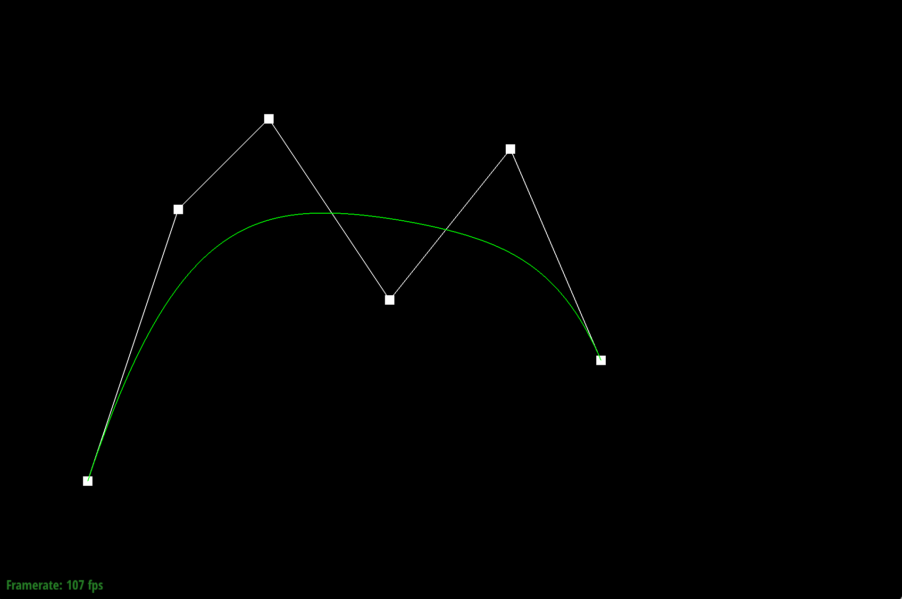
Original control points (0 steps)
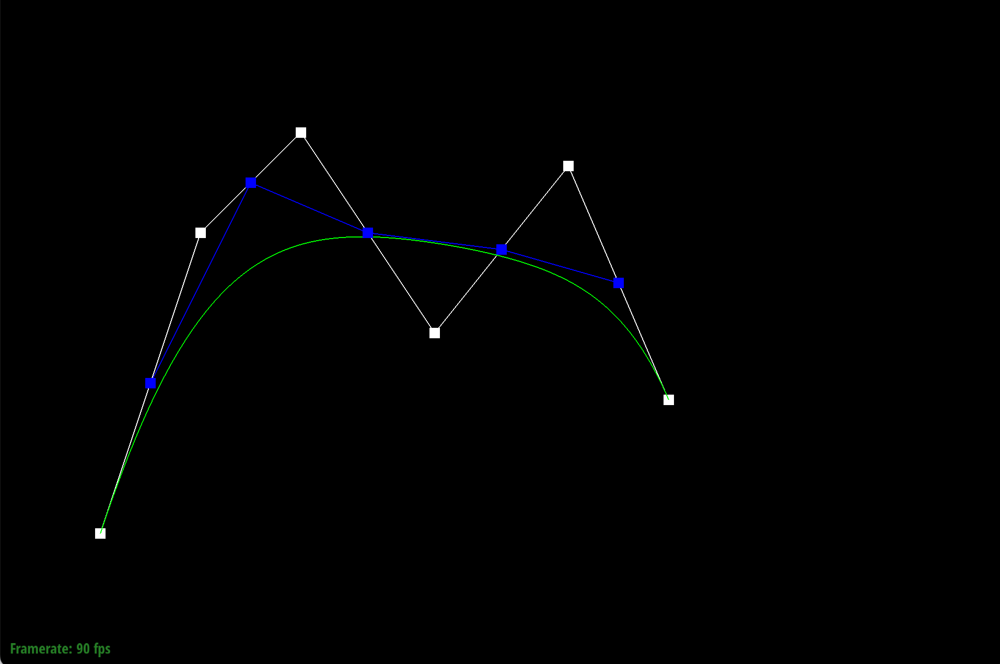
1 step
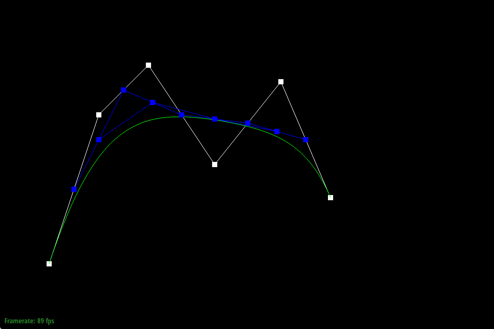
2 steps
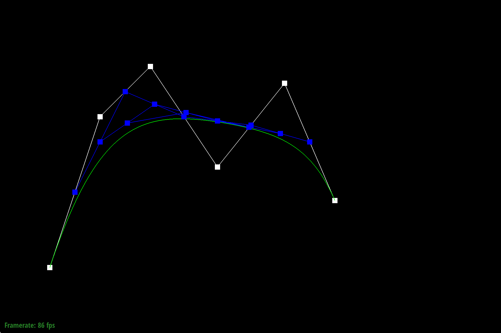
3 steps
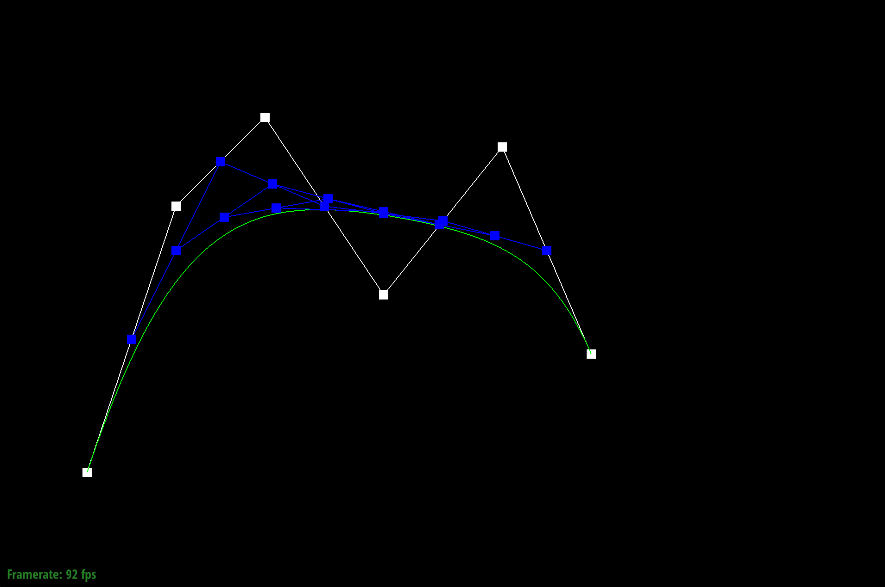
4 steps
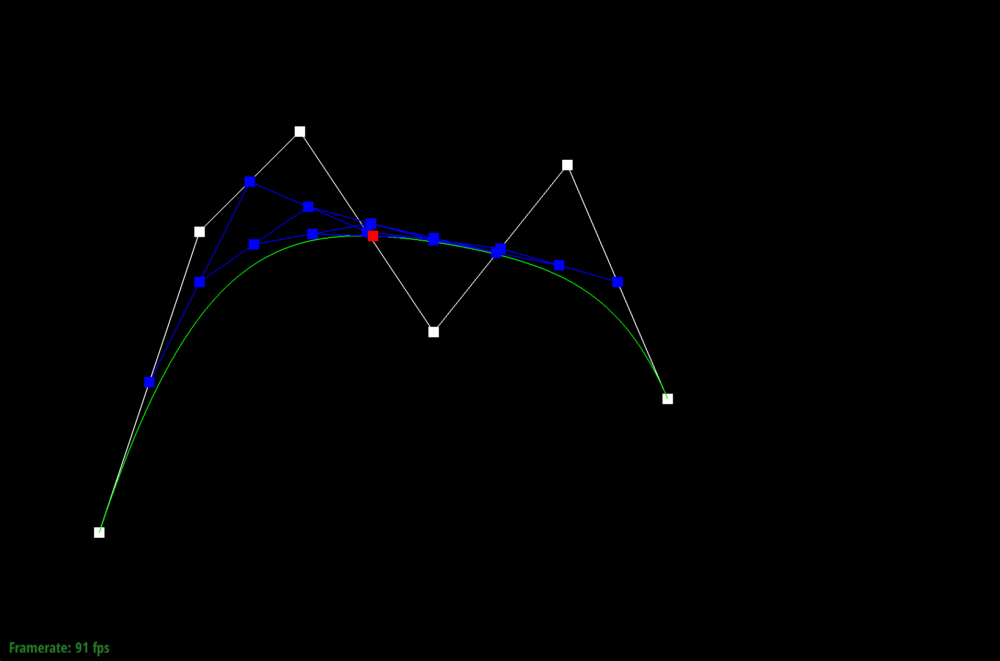
Final evaluated point (5 steps)
Show a screenshot of a slightly different Bezier curve by moving the original control points around and modifying the parameter t via mouse scrolling.
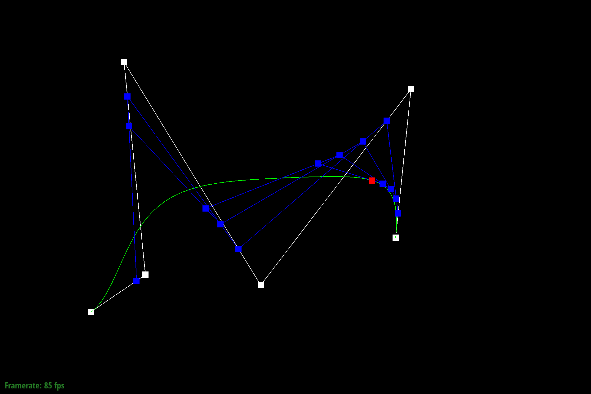
Part 2: Bezier surfaces with separable 1D de Casteljau
Briefly explain how de Casteljau algorithm extends to Bezier surfaces and how you implemented it in order to evaluate Bezier surfaces.
For Bezier surfaces, de Casteljau is applied in two separable 1D passes:
Evaluate each row of control points as a Bezier curve at u, producing one point per row.
Treat those resulting points as a new Bezier curve and evaluate it at v.
The final point is the surface point at (u, v).
Implementation in src/student_code.cpp:
BezierPatch::evaluateStep (src/student_code.cpp:37) does one interpolation level in 3D: (1 - t) * points[i] + t * points[i+1].
BezierPatch::evaluate1D (src/student_code.cpp:57) repeatedly calls evaluateStep until one point remains.
BezierPatch::evaluate (src/student_code.cpp:76) evaluates each control-point row at u, stores those row results, then evaluates that list at v.
Show a screenshot of bez/teapot.bez (not .dae) evaluated by your implementation.
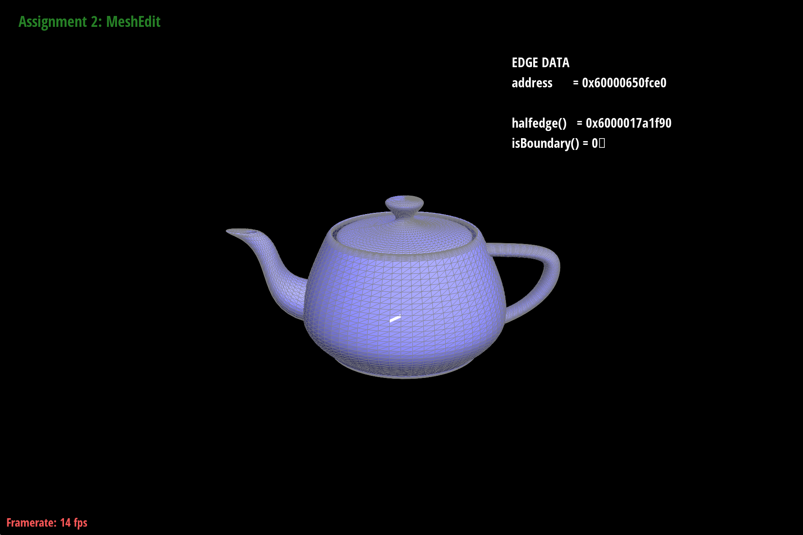
Section II: Triangle Meshes and Half-Edge Data Structure
Part 3: Area-weighted vertex normals
Briefly explain how you implemented the area-weighted vertex normals.
In Vertex::normal() (src/student_code.cpp:89), I:
Start from one outgoing halfedge of the vertex and iterate around its one-ring using h = h->twin()->next().
For each incident non-boundary face, get its three triangle vertices:
p0 = h->vertex()->position
p1 = h->next()->vertex()->position
p2 = h->next()->next()->vertex()->position
Add cross(p1 - p0, p2 - p0) to an accumulator. This cross product is an area-weighted face normal.
After visiting all incident faces, return the normalized sum (N.unit()).
So the result is the normalized area-weighted average of neighboring face normals.
Show screenshots of dae/teapot.dae (not .bez) comparing teapot shading with and without vertex normals. Use Q to toggle default flat shading and Phong shading.
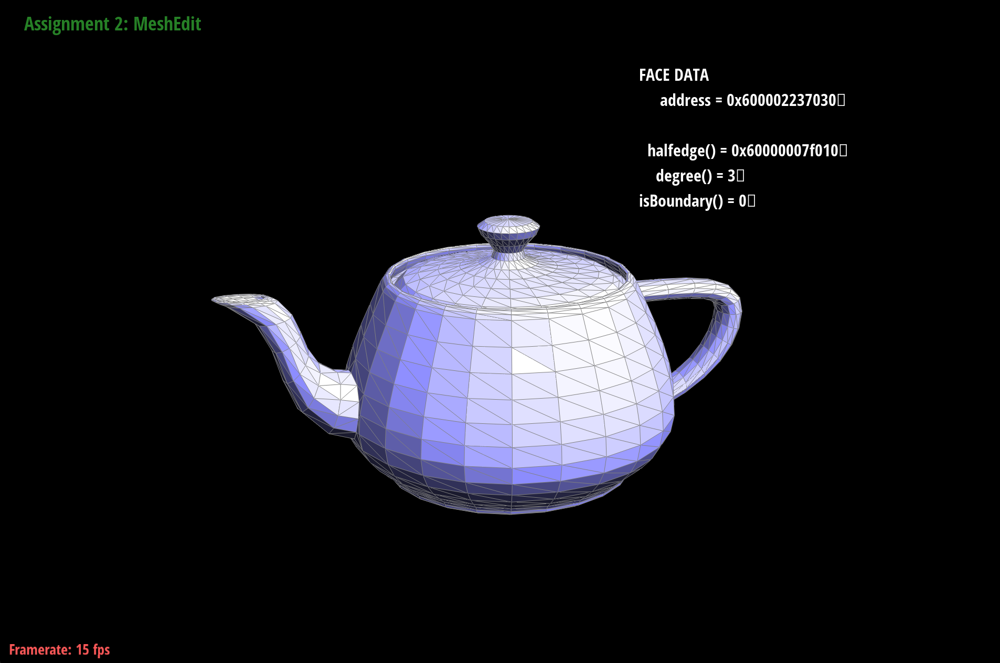
Without vertex normals / default flat shading
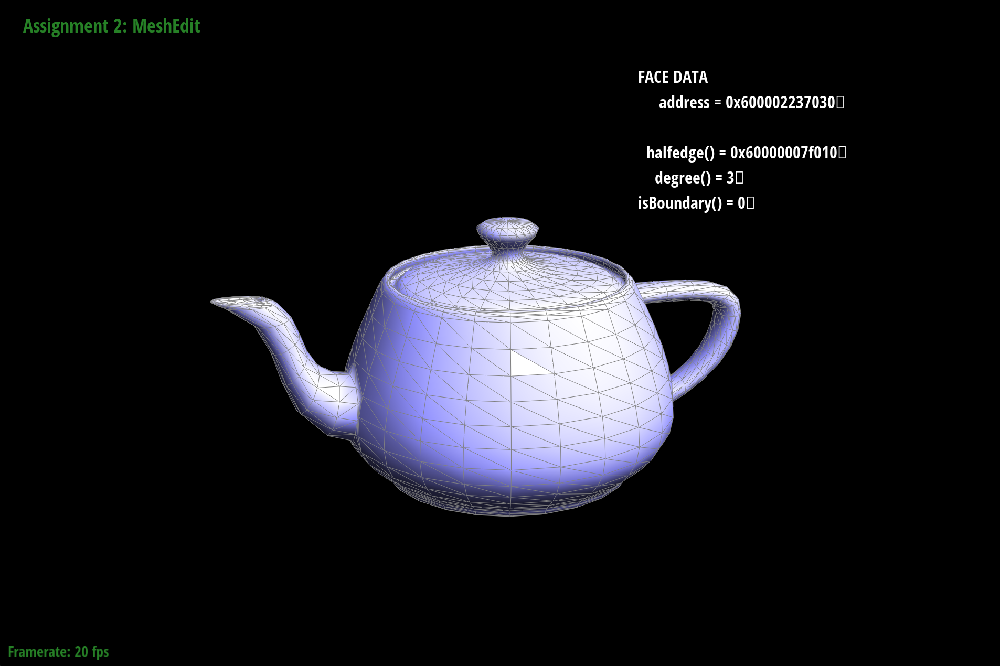
With vertex normals / Phong shading
Part 4: Edge flip
Briefly explain how you implemented the edge flip operation and describe any interesting implementation / debugging tricks you have used.
In HalfedgeMesh::flipEdge (src/student_code.cpp:112), I implemented edge flip as a pure local pointer rewrite:
Grab the 6 halfedges in the two incident triangles (h0..h5) and related vertices/edges/faces.
Early return if either adjacent face is boundary.
Rewire the 6 halfedges with setNeighbors(...) to represent the two new triangles after flip.
Update representative halfedge() pointers for affected edges/faces.
Update vertex halfedge() only when needed (if it was pointing to a halfedge whose root changed), then return e0.
Interesting implementation/debugging tricks:
I used a fixed naming/layout (h0..h5, vA..vD) matching the flip diagram to avoid pointer mixups.
I rewired all local halfedges explicitly in one block using setNeighbors(...), which reduces partial-update bugs.
I added the boundary guard first, so invalid flips are no-ops.
I used a robustness tweak: avoid unnecessary vertex halfedge() reassignment, especially to preserve boundary conventions.
For debugging, check_for(...) in halfEdgeMesh.h is the best sanity tool to verify who points to what after a flip.
Show screenshots of the teapot before and after some edge flips.
Okay I took two screenshots but I took the after-edge-flips screenshot first.
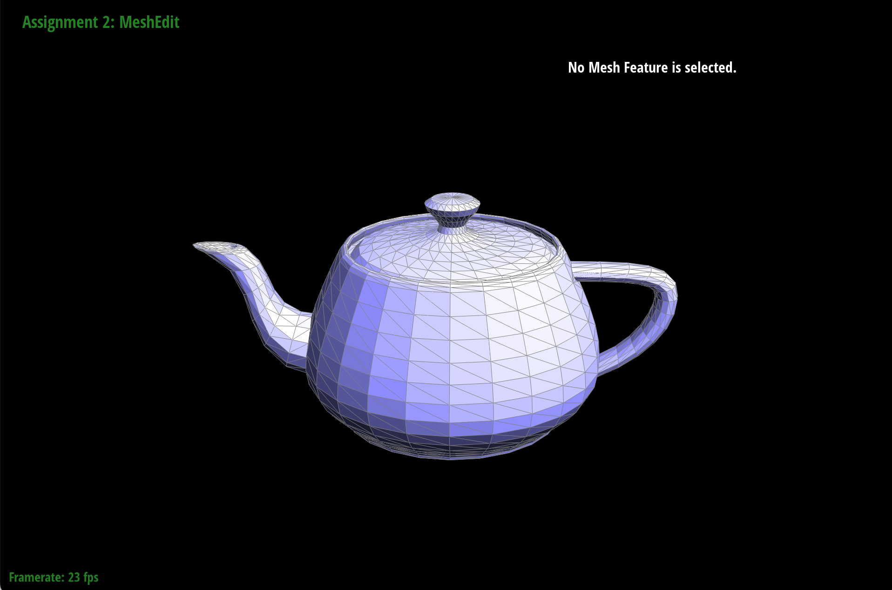
Before
After
Write about your eventful debugging journey, if you have experienced one.
Did not experience one.
Part 5: Edge split
Briefly explain how you implemented the edge split operation and describe any interesting implementation / debugging tricks you have used.
In HalfedgeMesh::splitEdge (src/student_code.cpp:170), I used a local connectivity rewrite approach similar to flip:
Collect the local neighborhood (h0..h5, vertices, edges, faces) around the target edge.
Branch:
Interior edge: split two triangles into four.
Boundary edge (extra credit): split only the non-boundary triangle and update the boundary loop.
Create only required new elements (newVertex, newEdge, newFace, newHalfedge).
Set the new vertex position to the midpoint of the original edge endpoints.
Reassign all local halfedge pointers with setNeighbors(next, twin, vertex, edge, face).
Update representative halfedge() pointers for affected vertices/edges/faces.
Return the new midpoint vertex; its halfedge() is set on the original split edge.
Useful implementation/debugging tricks I used:
Fixed naming (h0..h11, vA..vM) to match the split diagram and avoid pointer mixups.
Wrote triangle cycles explicitly in comments before pointer rewiring.
Kept operations strictly local/constant-time, no mesh-wide traversal.
Preserved boundary conventions by handling boundary split in a dedicated path.
Use check_for(...) (in halfEdgeMesh.h) to verify pointer incidence if anything looks wrong after repeated S/F operations.
Show screenshots of a mesh before and after some edge splits.
Before
After
Show screenshots of a mesh before and after a combination of both edge splits and edge flips.
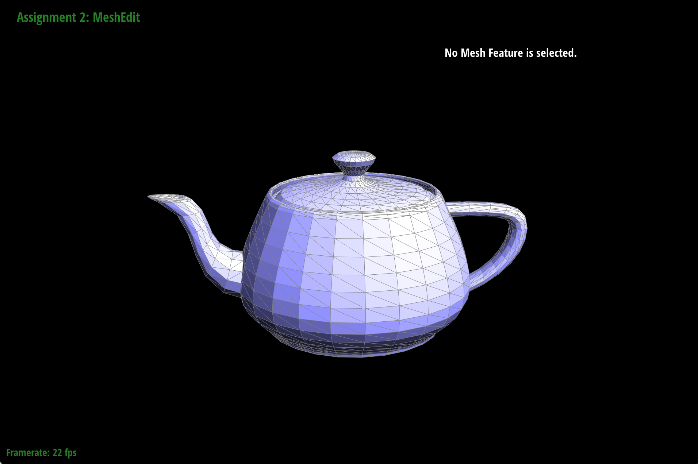
Before
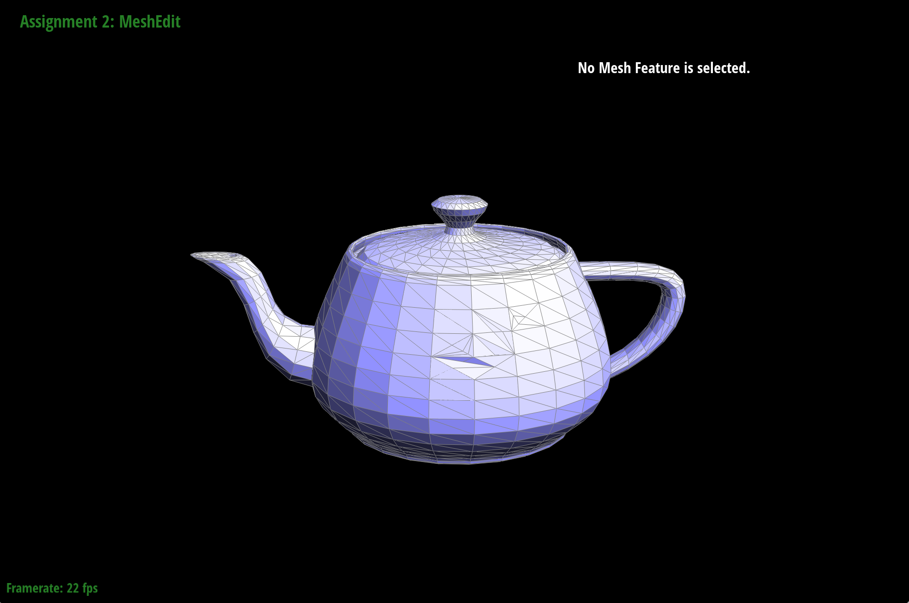
After
Write about your eventful debugging journey, if you have experienced one.
Did not experience one.
(Extra Credit) If you have implemented support for boundary edges, show screenshots of your implementation properly handling split operations on boundary edges.
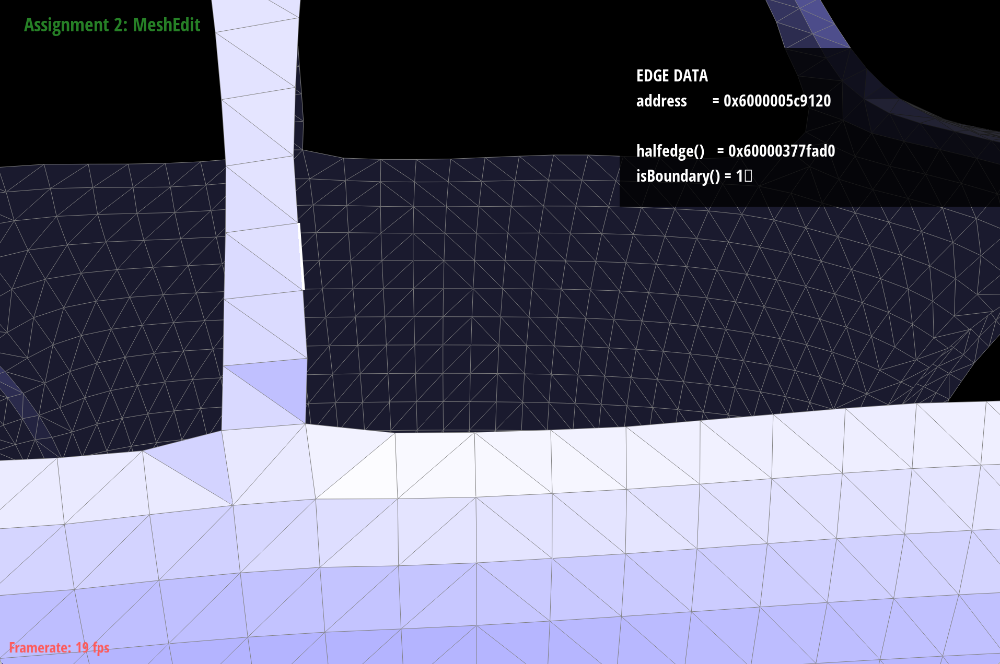
Before
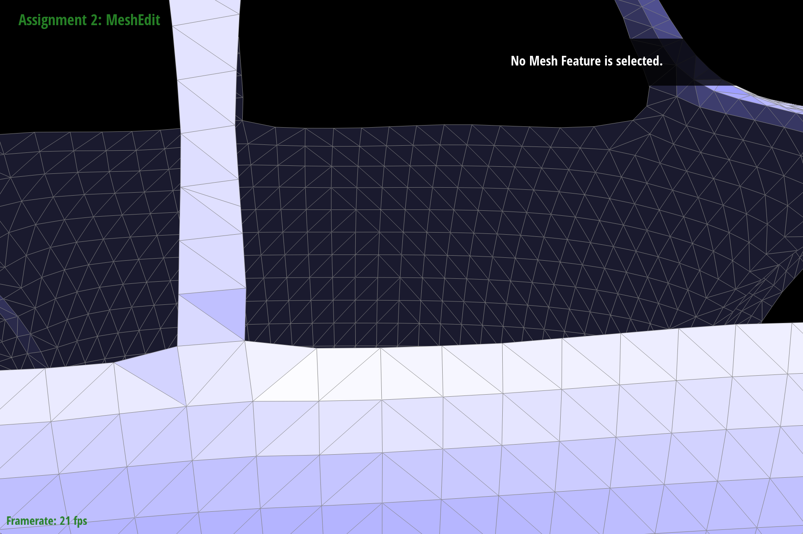
After
Part 6: Loop subdivision for mesh upsampling
Briefly explain how you implemented the loop subdivision and describe any interesting implementation / debugging tricks you have used.
In MeshResampler::upsample (src/student_code.cpp:323), I implemented Loop subdivision in three stages:
1. Precompute positions on the original mesh
Old vertices: store Loop-updated value in Vertex::newPosition.
Old edges: store midpoint vertex value in Edge::newPosition (3/8, 1/8 rule for interior; midpoint for boundary extra credit).
Mark original vertices/edges with isNew = false.
2. Topology update (4-1 subdivision)
Cache original edges first, then split each once (avoids iterator invalidation/infinite splitting).
Mark each inserted midpoint vertex as isNew = true, and set its newPosition from the precomputed edge value.
Mark which resulting edges are new vs old.
3. Post-process connectivity + commit positions
Flip only edges that are isNew and connect one old vertex and one new vertex.
Copy all newPosition values into Vertex::position.
Useful tricks:
Staging all geometry in newPosition before changing topology keeps formulas based on original positions.
Caching original edges before splitting avoids dynamic-mesh traversal bugs.
Using isNew flags cleanly separates which edges to flip.
For debugging, repeated split/flip stress tests and check_for(...) pointer checks are the fastest way to catch connectivity mistakes.
Take some notes, as well as some screenshots, of your observations on how meshes behave after loop subdivision. What happens to sharp corners and edges? Can you reduce this effect by pre-splitting some edges?
Notes
After each Loop subdivision (L), the mesh gets smoother and more rounded.
Sharp corners are pulled inward and become less sharp.
Sharp edges turn into soft, curved transitions unless you add supporting topology.
The effect is strongest on coarse meshes with few triangles.
You can reduce corner/edge rounding by pre-splitting (S) edges near features you want to preserve, because extra nearby vertices constrain smoothing.
This does not keep edges perfectly sharp forever, but it significantly delays/weakens the rounding.
What to screenshot
A coarse model with obvious sharp features (best: cube.dae) before any subdivision.
Same view after 1 Loop subdivision (L once).
Same view after 2 Loop subdivisions (L twice total).
Reset/reload model. Pre-split several edges around one corner and along one edge loop (S), then screenshot before upsampling.
Same pre-split model after 1 Loop subdivision.
Same pre-split model after 1 Loop subdivision (rotated).
Same pre-split model after 2 Loop subdivisions (rotated).
Example layout for 7 images.
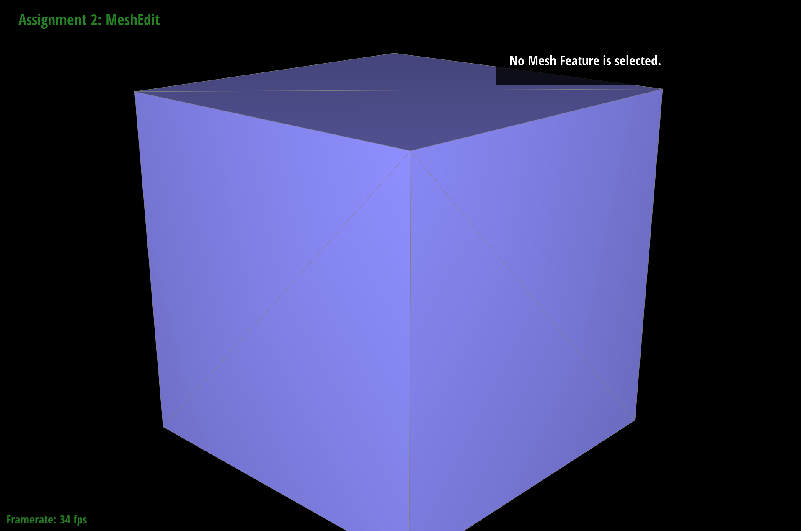
Caption 1
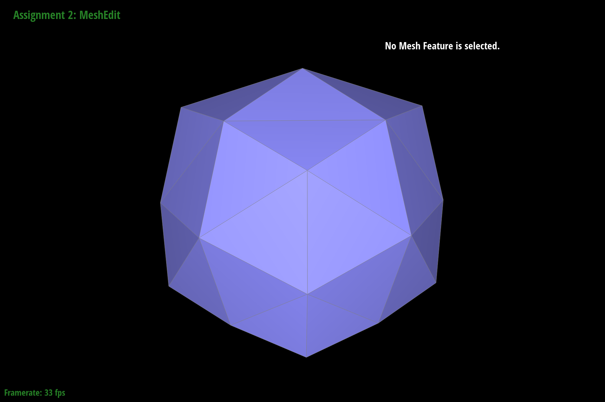
Caption 2
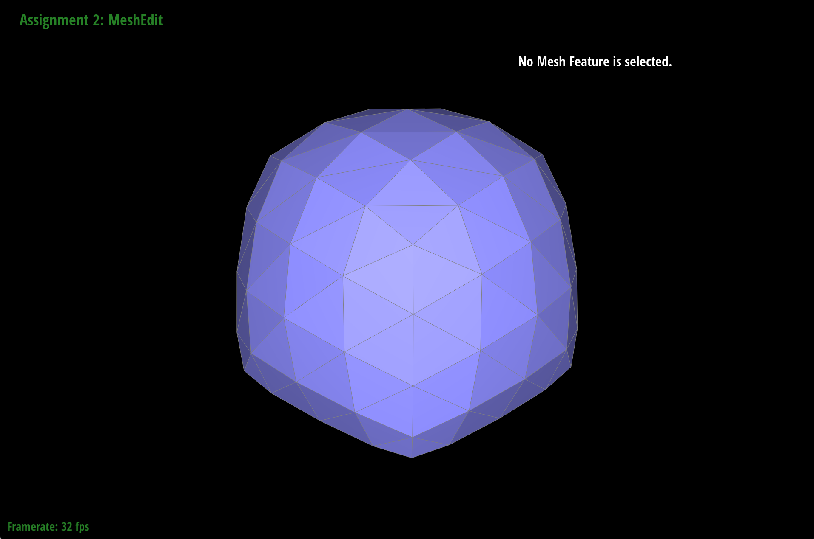
Caption 3
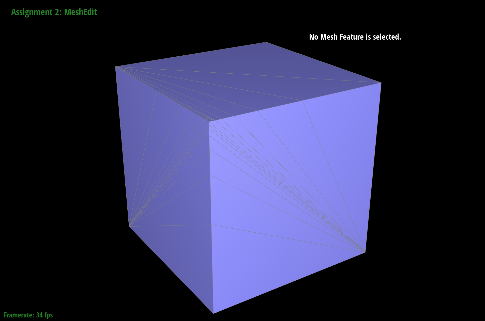
Caption 4
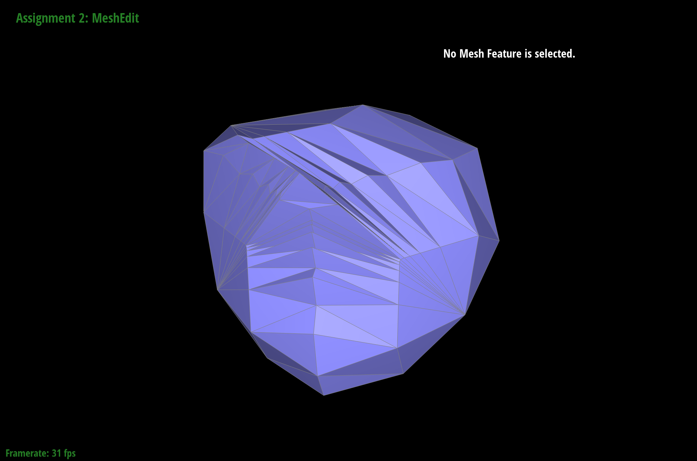
Caption 5
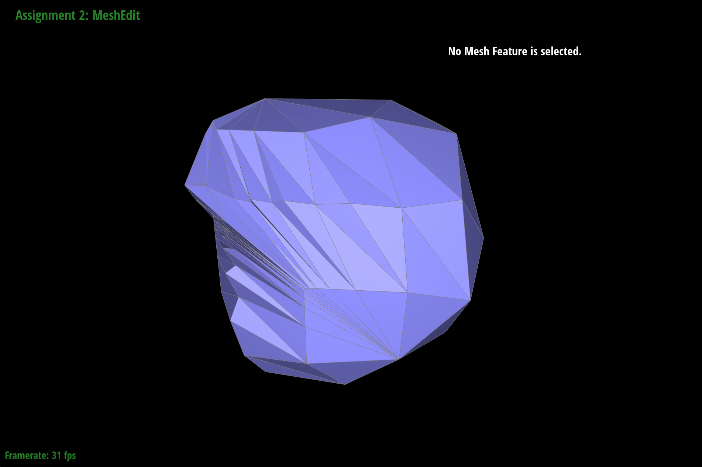
Caption 6
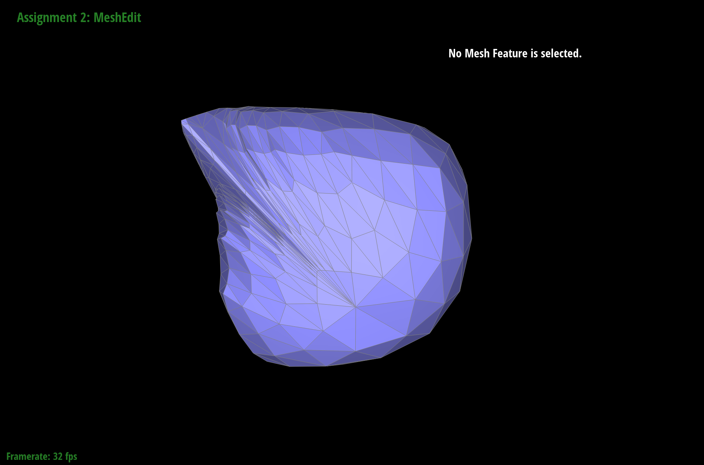
Caption 7
Load dae/cube.dae. Perform several iterations of loop subdivision on the cube. Notice that the cube becomes slightly asymmetric after repeated subdivisions. Can you pre-process the cube with edge flips and splits so that the cube subdivides symmetrically? Document these effects and explain why they occur. Also explain how your pre-processing helps alleviate the effects.
Yes. A good symmetric pre-process for cube.dae is:
On each of the 6 cube faces, select the face's internal triangulation diagonal (the line across the square face).
Press S once on that diagonal (do this for all 6 faces).
If any face center fan looks skewed, use F locally to restore a clean 4-triangle fan around the new face-center vertex.
Why the asymmetry happens:
Loop subdivision depends on mesh connectivity, not just geometry.
The cube is triangulated with one diagonal per square face, and that diagonal pattern is not perfectly symmetric under all cube symmetries.
So vertices do not all have equivalent one-ring neighborhoods; subdivision weights differ slightly by location, which introduces directional bias after repeated L.
Why this pre-process helps:
Splitting each face diagonal inserts a center vertex per face and turns each square face into a symmetric 4-triangle fan.
This makes the 8 original cube corners topologically equivalent (same neighborhood structure), so they get updated more uniformly.
Result: repeated Loop subdivision stays much more symmetric and converges to a cleaner rounded-cube shape.
What to screenshot:
Original triangulated cube (show visible face diagonals).
Cube after several L (show asymmetry).
Pre-processed cube after splitting all 6 face diagonals (before L).
Pre-processed cube after same number of L steps from (2), same camera angle.
Here is an example 2x2 gridlike structure using an HTML table. Each tr is a row and each td is a column in that row. You might find this useful for framing and showing your result images in an organized fashion.
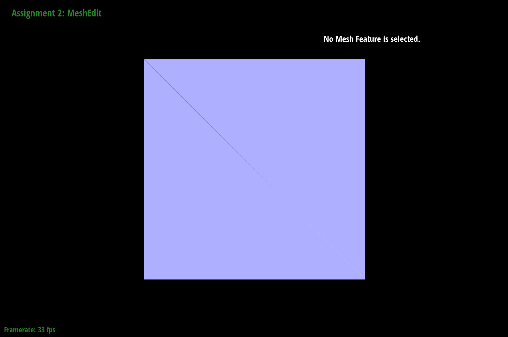
Caption goes here.
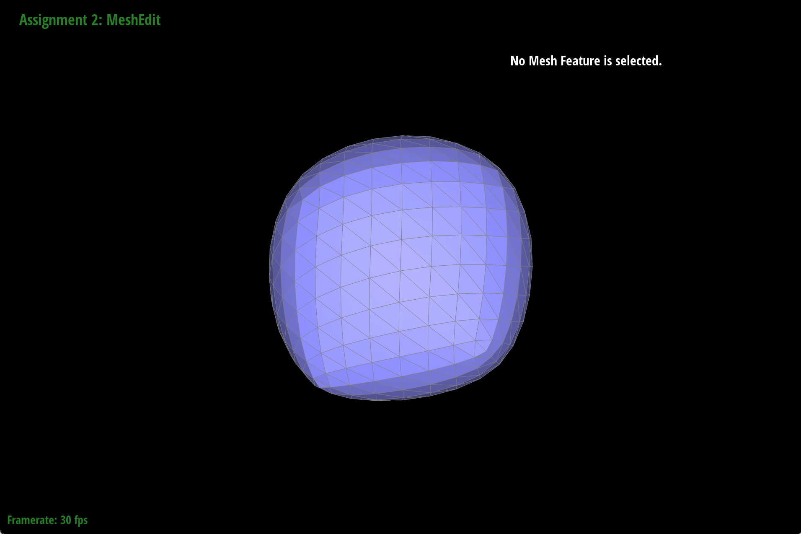
Caption goes here.
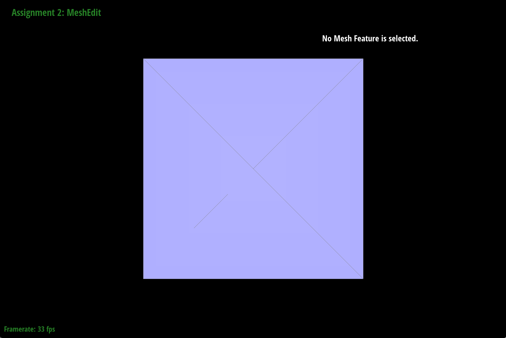
Caption goes here.
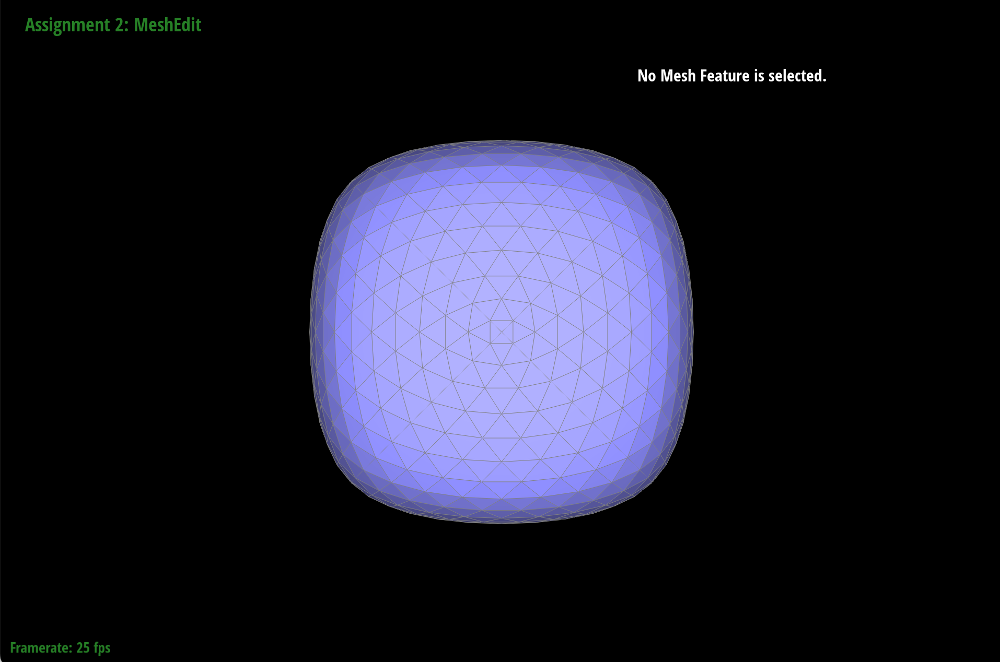
Caption goes here.
If you have implemented any extra credit extensions, explain what you did and document how they work with screenshots.
I implemented the boundary-handling extra credit in two places:
1. HalfedgeMesh::splitEdge(...) in src/student_code.cpp:170
Added a boundary-edge branch.
If one adjacent face is boundary, it splits only the non-boundary triangle and updates the boundary loop connectivity.
New midpoint vertex is still placed at edge midpoint and returned.
2. MeshResampler::upsample(...) in src/student_code.cpp:323